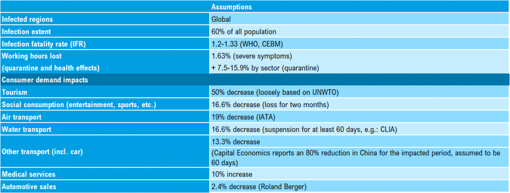
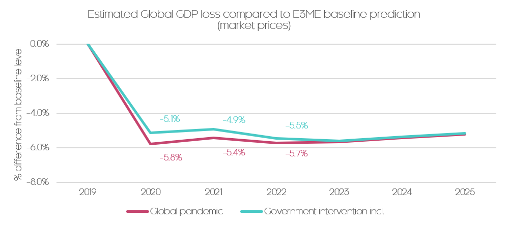
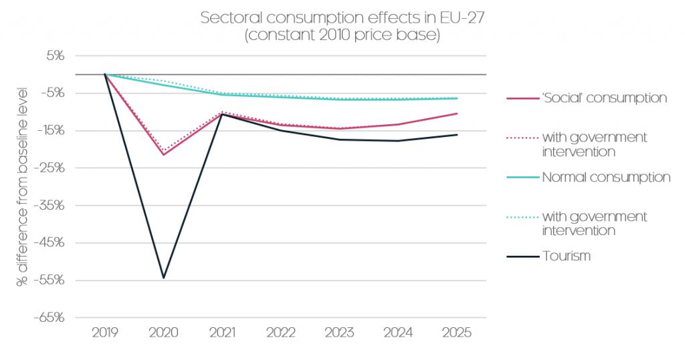

Coronavirus - initial results from economic modelling
Originally published in Mar 2020, updated Apr 2020, on Cambridge Econometrics E3ME blog
UPDATED on 16/04/2020
Global GDP: we currently project the COVID-19 pandemic will reduce global GDP by 5% below a no-virus baseline in 2020 and 2021
Private indebtedness: the impacts on private indebtedness suggest that the subsequent recovery will be slow: while pre-crisis growth rates are restored, the lost level of GDP is not made up (a similar profile to what followed the Great Recession)
Government action: to mitigate those impacts further, governments will need to scale up the socialisation of private debt (through direct subsidy) and not merely ensure that liquidity is provided
In Coronavirus: how to model the economic impacts of a pandemic Hector Pollitt, our Head of Modelling, wrote about the difficulty involved in using economic models to tackle challenges like the novel Coronavirus (COVID-19). Here, we show the results of an initial modelling exercise that tries to understand and quantify effects in a specified case. As such it can serve as an indication of what can be expected.
Of course, economic considerations come second to protecting public health. However, economic implications are not only linked to health outcomes, but can stay with us after the health crisis is averted. Therefore, for all the noted limitations of economic models and the uncertainty of outcomes, it is important to assess how the global economy may be affected by COVID-19 and any measures taken to limit its extent.
According to economist Simon Wren-Lewis it is accepted that pandemics have a two-fold effect on the economy. They create a supply-side shock, reducing working capacity (due to health effects and measures to contain the virus – e.g. quarantines), but they also generate a demand-side shock.
Just think how people are stocking up on medical supplies while cancelling flights and holiday plans. At the same time, social consumption (mainly services) may also suffer a fallback. The E3ME model provides a framework to assess both the demand and supply-side shocks associated with such a scenario.
Constructing a global pandemic scenario
There are various uncertainties about the COVID-19 virus that are yet to be pinned down by healthcare professionals and experts in infectious disease. The best we can do is to use numbers estimated by these experts and to base our assumptions on historical experience.
For this modelling exercise we have set up two scenarios: (1) a global pandemic scenario, where we assume that the virus will not be stopped effectively, infects a significant share of the global population, and where governments do not intervene successfully; and (2) a scenario where we account for fiscal government policy as collected by Bruegel. The two scenarios are identical in most aspects, the main difference being the level of government response to the pandemic.
To model these scenarios in E3ME, we first need an assumption for the scope of the pandemic. Estimates of the potential extent of infection are mostly informal: Marc Lipsitch of Harvard has estimated a 40%-70% infection rate, while Gabriel Leung of Hong Kong University has suggested an infection rate of about 60%. Based on these numbers, we assume a 60% infection rate for this analysis.
We assume that there are several outcomes of the infection. Cases with severe symptoms are assumed to lead to a loss of working hours, as people take time to recover from the virus. We calculate the reduction in the productive capacity of the economy, taking account of expected mortality rates along with a loss of working hours due to the prevalence of severe symptoms. It is also assumed that there will be strict quarantines globally, for up to a month. To account for the loss of productivity due to remote working, the loss of working hours is discounted with sector-level remote working potential based on US data.
Demand-side effects are even more uncertain. Our estimates are largely based on past experience, including the magnitude of effects that we have already seen in China. Impacts that are already evident in the Chinese economy include the fallback of road transport, entertainment, tourism and air travel.
The 2003 outbreak of the SARS virus (also in China) can provide some indication of longer-term effects such as decreased consumption in the services, retail, transport, tourism and catering sectors.
Taking account of the slump in oil demand and rift between Saudi Arabia and Russia, we assume a 50% reduction in the oil price from baseline in 2020 and a gradual return to the baseline level over the following five years.
Our assumptions for the progress of the disease, the impacts on labour supply and cuts to different categories of household consumption are summarised in the table below. We keep these assumptions fairly simple as uncertainties are high and, at this point, transparency is more useful than a high level of detail. After the first year, the econometric specification for consumption in each country determines the subsequent path, but there is typically no rapid return to the baseline level of spending.

Modelling results – a blow to the economy with varied recovery
We compare results to a standard baseline (how the economy would have developed without the virus). We estimate a -5.8% loss of global GDP IN 2020 for the global pandemic scenario, mitigated somewhat to -5.1% in the case with government intervention.
There are various possibilities for the nature of the subsequent recovery. The most optimistic is a rapid rebound with private spending recovering quickly as soon as restrictions are lifted. But it is at least as plausible that there will be a loss of productive capacity compared with the baseline due to bankruptcy of firms and depressed investment, accompanied by greater private sector indebtedness. Hence, in our modelling, we have a recovery in growth but not a recovery to the baseline level of output: we estimate a global GDP loss compared with baseline of around -5% for 2021. These numbers are similar in 2020 and 2021 to what the IMF has recently published (about -6% from its earlier baseline for 2020 and about -4% for 2021), but output remains lower in our scenario in later years.

Different consumption behaviour, different recovery
Sectoral effects are also of interest as sectors can produce varied recovery paths as noted by Bain. Tourism is likely to be one of the hardest hit sectors. Measures to contain the virus, and the virus itself, have already caused a major loss of tourism revenues. But what could be even more important is the nature of the purchases of tourism and ‘social consumption’ services.
In the case of consumer goods (for example, home electronics or apparel) if purchases are delayed, there will probably be an excess purchase when the crisis is over. But excess consumption is less likely to be the case for vacations and so consumption (and output) is lost. Our Chairman Richard Lewney provides a further explanation of this in his explainer blog: The economics of the Coronavirus pandemic.
There is another significant effect that we need to take into account: job losses seem to be inevitable at this point, which will lead to losses of income and thus a long-term reduction of demand and spending. This is then causes what we called an “L” shaped recovery. Therefore, while in normal consumption we expect an rebounce effect, this will be mitigated by a general downturn – which puts additional pressure on sectors which are already losing to the pandemic.
To some extent our modelling bears this out: losses in sectors with ‘normal consumption’ (e.g. food, beverages, apparel) are relatively low in 2020 by design, but they stay relatively mild through the modelling period, with a slow recovery path. While in sectors with social consumption (e.g. entertainment, recreation) and in tourism the recovery of consumption by 2021 is significant, but it is far from initial baseline levels, with a long period of lower demand and prolonged recovery.

The role of policy
The final uncertainty relates to potential policy responses. Our modelling of the scenario with government interventions includes some recently announced fiscal policies, “relief packages”, to counteract the economic slowdown.
We modelled these packages as a general increase in government spending over the next four quarters. Such packages will be needed to sustain the health of our economies. To maximise effectiveness, these packages will also need to be targeted to support those sectors, such as tourism, that are most likely to suffer substantial losses. As it can be seen from the figure above, our modelling indicates that these packages are important to decrease the losses of this year, but to mitigate the medium-term economic effects we will need new measures as well. Richard writes about some of these potential policy responses in his post.
Modelling exercises like this one could play an important role in identifying how sectors will ultimately be affected by the spread of a virus such as COVID-19, while modelling of potential policy actions could help us understand the effectiveness of government action.
UPDATED on 16/04/2020, the first version of this article was published on 25/03/2020.